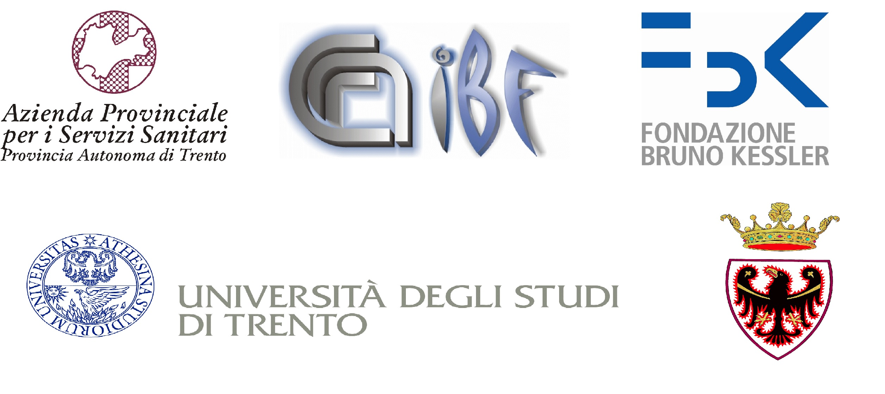

Cos'è e come nasce
FILOROSSO è un’associazione che opera da anni nel campo della Cooperazione internazionale con Equador, Bulgaria, Cuba e Uruguay, con azioni proprie, con contributi da privati cittadini e da Enti pubblici.
La Cooperazione e la Solidarietà fra i popoli della terra, così diversi ma uniti dalla stessa umanità, è la strada per uno sviluppo equo che permetta a tutti una vita degna di essere chiamata tale. Le nostre azioni nascono e si realizzano nell’ottica dell’”attraversamento culturale” paritario e di reciproco rispetto.
Anche il nostro logo vuole rappresentare un simbolico filo che percorre, attraversa e unisce storie diverse.
Scarica lo statuto in formato pdf
Paesi d'intervento:
Cuba, Equador, Bulgaria, Uruguay.
Cooperazioni e sponsor:
